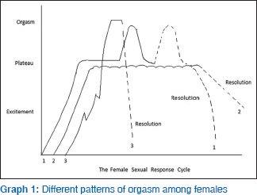

Female Sexuality
Sathyanarana Rao, T; Nagaraj, Anil Kumar . Indian Journal of Psychiatry, suppl. Supplement 2 ; Mysore Vol. 57, (Jul 2015): 296-302.Sex is a motive force bringing a man and a woman into intimate contact. Sexuality is a central aspect of being human throughout life and encompasses sex, gender identities and roles, sexual orientation, eroticism, pleasure, intimacy, and reproduction. Sexuality is experienced and expressed in thoughts, fantasies, desires, beliefs, attitudes, values, behaviors, practices, roles and relationships. Though generally, women are sexually active during adolescence, they reach their peak orgasmic frequency in their 30s, and have a constant level of sexual capacity up to the age of 55 with little evidence that aging affects it in later life. Desire, arousal, and orgasm are the three principle stages of the sexual response cycle. Each stage is associated with unique physiological changes. Females are commonly affected by various disorders in relation to this sexual response cycle. The prevalence is generally as high as 35-40%. There are a wide range of etiological factors like age, relationship with a partner, psychiatric and medical disorders, psychotropic and other medication. Counseling to overcome stigma and enhance awareness on sexuality is an essential step in management. There are several effective psychological and pharmacological therapeutic approaches to treat female sexual disorders. This article is a review of female sexuality.
LINKS:
Check for full text in other resourcesIntroduction
Sex is a motive force bringing a man and a woman into intimate contact. Satisfying usual experience is an essential part of a healthy and enjoyable life for most people. Sexual activity is a multifaceted activity involving complex interactions between the nervous system, the endocrine system, the vascular system and a variety of structures that are instrumental in sexual excitement, intercourse, and satisfaction. Though essentially it is meant for procreation, it has also been a source of pleasure, a natural relaxant, it confirms one's gender, bolsters one's self-esteem and sense of attractiveness for mutually satisfying intimacy and relationship. [1] The World Psychiatric Association has defined sexual health as "a dynamic and harmonious state involving erotic and reproductive experiences and fulfillment, within a broader physical, emotional, interpersonal, social, and spiritual sense of well-being, in a culturally informed, freely and responsibly chosen and ethical framework; not merely the absence of sexual disorders." This can be considered the most comprehensive definition of sexual health as it incorporates many domains like historical, physiological, psychological, interpersonal, sociocultural, and ethical views, including attention to human rights issues. [2]
Sexuality is a central aspect of being human throughout life and encompasses sex, gender identities and roles, sexual orientation, eroticism, pleasure, intimacy, and reproduction. Sexuality is experienced and expressed in thoughts, fantasies, desires, beliefs, attitudes, values, behaviors, practices, roles, and relationships. While sexuality can include all of these dimensions, not all of them are always experienced or expressed. Sexuality is influenced by the interaction of biological, psychological, social, economic, political, cultural, ethical, legal, historical, religious, and spiritual factors. [3] This article is a review of female sexuality.
Female Sexuality
In the first millennium BC, human cultures clearly experienced an "axial period" in a striking transformation of human consciousness. The transformation occurred independently in three geographical regions: In China, in India and Persia, and in the Eastern Mediterranean, including Israel and Greece. In this cultural transformation, a prevailing mythic, cosmic, ritualistic, collective consciousness embedded in a tribal matrix with the female in the foreground, slowly gave birth to a male dominated, rational, analytical, and individualistic consciousness. This transition in cultural values began very slowly after the last ice age retreated. [4]
In a developing country like India, modern Hindu cultures even today contain a general disapproval of the erotic aspect of married life, a disapproval that cannot be disregarded as a mere medieval relic. Many Hindu women, especially those in the higher castes, do not even have a name for their genitals. Though the perception of modern Indian women is transforming, many of them still consider the sexual activity a duty, an experience to be submitted to, often from a fear of abuse. [5]
According to Sigmund Freud, both sexes seem to pass through the early phases of libidinal development in the same manner. Psychologically, the male-female difference in sexuality starts only during the phallic phase, with the appearance of Oedipus complex. However, the difference becomes most clear only during the genital phase. [6] Though generally, women are sexually active during adolescence, they reach their peak orgasmic frequency in their 30s, and have a constant level of sexual capacity up to the age of 55 with little evidence that aging affects it in later life. [7]
Masturbation is a mode of sexual activity for both men and women though it has been a source of social concern and censure throughout the human tradition. It has been said that 99% of young men and women masturbate occasionally, and the hundredth conceals the truth. In women, masturbation can happen in many ways. Here the stimulation of the clitoris is the central issue. Typically, the hand and finger make circular, back and forth or up and down movements against the mons and clitoral area. Most women avoid direct stimulation of the glans of the clitoris because of extreme sensitivity. Some women thrust the clitoral area against an object such as bedding or pillow, others by pressing thighs together and by teasing the pelvic floor muscles that underlie the vulva. Contrary to what is depicted in pornography, vaginal insertion to reach an orgasm is not common. Some women can reach orgasm by pressing the breast alone and a few women (2%) by fantasy alone. Some individuals use vibrators for added enjoyment and variation. By masturbation, many women need <4 min to reach orgasm. [8]
The Sexual Response Cycle
Following the pioneering work of Masters and Kaplan, the sexual response cycle in both sexes is often categorized as a four-phase process, desire, excitement, orgasm, and resolution. [9]
The first stage, sexual desire, consists of the motivational or appetitive aspects of sexual response. Sexual urges, fantasies, and wishes are included in this phase. The second stage, sexual excitement, refers to a subjective feeling of sexual pleasure and accompanying physiological changes. This phase includes penile erection in males and vaginal lubrication in females. Plateauing, sometimes classified as a separate phase, is a heightened state of excitement attained with continued stimulation. There is marked sexual tension in this phase, which sets the stage for the orgasm. The third stage, orgasm or climax is defined as the peak of sexual pleasure, with rhythmic contractions of the genital musculature in both men and women, associated with ejaculation in men. [Graph 1]shows three different patterns of orgasm in females. Pattern 1 shows multiple orgasms. Pattern 2 shows arousal that reaches the plateau level without going onto orgasm (note that resolution occurs very slowly). Pattern 3 shows several brief drops in the excitement phase followed by an even more rapid resolution phase. This is the final phase, during which a general sense of relaxation and well-being is experienced.

Then, there is a refractory period in males, which is usually absent in females. [Table 1] shows the physical changes in the female during the sexual response cycle. [10]

Classification
Based on the phases of sexual response cycle, both International Classification of Diseases (ICD) 10 and Diagnostic and Statistical Manual of Mental Disorders (DSM) V have listed a variety of sexual disorders in women.
In ICD 10, the sexual dysfunction is classified under F52, which is "sexual dysfunction, not caused by organic disorder or disease." In DSM V, there are several modifications compared to the previous version that is, DSM IV. Now it is segregated from gender identity disorders and a separate chapter by name "sexual dysfunctions" is elaborated in DSM V. With respect to female sexuality, an important deviation from the earlier concept is that the difficulties in desire and arousal often simultaneously characterize the complaints of women. Thus, the two entities are merged in DSM V. The sexual desire disorder in women is not listed separately. It is now called "female sexual interest/arousal disorder" and is listed under arousal disorders. [Table 2] compares the nosological status of sexual dysfunction in females among the two diagnostic manuals.
Specific Problems
In general, there has been an acute dearth of valid or reliable statistical data on the epidemiology of female sexual disorders. This is particularly true when it comes to nonwestern settings.
In a survey of the US general population, sexual dysfunction was more prevalent in women (43%) than men (31%) and was associated with various sociodemographic characteristics including age and educational attainment. Women of different social groups demonstrate a different pattern of sexual dysfunction. The experience of sexual dysfunction is more likely among women (and men) with poor physical and emotional health. [11] In England, a study asserts that about two-fifths of women (41%) reported having a current sexual problem. The most common problems were a lack of desire, vaginal dryness, and infrequent orgasm. [12] Another study from England reports the prevalence rate of sexual dysfunction in women as 42%, vaginismus was reported by 30% of them, and anorgasmia by 23%. [13]
A recent cross-sectional study from a different geographical area (Iran) using Female Sexual Function Index (FSFI) also found a similarly prevalent sexual problems in the range of 22% (<20 years) to 75% (40-50 years). Problems with desire were found with 45%, arousal problems in 37%, the lubrication problem in 41%, the orgasmic problem in 42% and pain problem in 42%. Some of the important associated etiological factors were older age, infrequent sexual activity, more than 10 years of marriage, more than three kids and husbands more than 40 years. The authors consider that the female sexual dysfunction is a significant public health problem of women in that nation. [14]
The literature on etiological factors associated with sexual dysfunction infers that in women, the predominant association with arousal, orgasmic, and enjoyment problems was marital difficulties. Vaginal dryness was found to increase with age after menopause. In general, sexual dysfunction was commonly associated with social problems in women. [15]
Specific Problems
Sexual dysfunction includes disorders of (i) desire, (ii) arousal, (iii) orgasm and (iv) sexual pain disorders. [16],[17]
Disorders of sexual desire
It is explained as an independent entity in ICD 10 (and not in DSM V as mentioned before). It includes lack or loss of sexual desire, sexual aversion and lack of sexual enjoyment. Lack or loss of sexual desire is manifest by the diminution of seeking out sexual cues, of thinking about sex with associated feelings of desire or appetite, or of sexual fantasies. There is a lack of interest in initiating sexual activity either with a partner or by masturbation. Sexual aversion is defined as a disorder in which the prospect of sexual interaction with a partner produces sufficient aversion, fear or anxiety that sexual activity is avoided. In the disorder of lack of sexual enjoyment, genital response (orgasm) occurs during sexual stimulation, but is not accompanied by pleasurable sensations or feelings of pleasant excitement.
It has been estimated that about 20% of the female population have the hypoactive sexual desire. Chronic stress, anxiety, depression, prolonged period of abstinence from sex, hostility in relationship with partner, previous bad experience with sex, childhood sexual abuse, religious taboos, low biological drive, dysfunction of the hypothalamic pituitary axis, endocrinal disorders, ovarian failure, psychotropic, and cardiovascular drugs are the various etiological factors associated with low sexual desire.
Disorder of arousal
The failure of genital response in females is experienced as the failure of vaginal lubrication, together with inadequate tumescence of the labia. However, a subjective sense of arousal is often poorly correlated with it in that women complaining of lack of arousal may lubricate vaginally, but may not experience a subjective sense of excitement. There is also a lack of vaginal smooth muscle relaxation and decreased clitoral enjoyment. Though, exact prevalence is not known, about 35% of women report difficulty in maintaining adequate sexual excitement. This dysfunction causes marked distress in women. The etiological factors include vasculogenic, neurogenic and endocrine factors, systemic diseases, psychotropic drugs and psychosocial factors.
Orgasmic disorder
Achieving orgasm adequately is highly treasured by women as it is seen as a mark of high self-esteem, and confidence in one's feminity resulting in a high desire for sexual activity. Persisting and recurring difficulty in achieving orgasm is termed as anorgasmia. The appropriate, reported prevalence of this disorder is in the range of 5-10%. Women who suffer solely form orgasmic dysfunction may have normal desire and arousal but have great difficulty in reaching climax. However, the distress over inability to reach orgasm may lead on to decrease in desire and arousal.
Among the etiological factors for orgasmic disorders, the organic factors include neurological conditions that affect the nerve supply to the pelvis, like multiple sclerosis, spinal card tumors or trauma, nutritional deficiencies, diabetic neuropathy, vascular causes, endocrine disorders and drugs like methyldopa, antipsychotics, antidepressants, and benzodiazepines. An important psychosocial factor implicated in orgasmic disorders is the negative cultural conditioning. Specific developmental factors like traumatic sexual experiences during childhood, negative attitude toward sex and interpersonal factors like hostility toward spouse are also implicated in orgasmic disorders.
Sexual pain disorders
These are of two types: (1) Dyspareunia (2) vaginismus.
Dyspareunia
Dyspareunia is defined as recurrent or persistent genital pain before, during or after sexual activity. It can be divided into superficial, vaginal and deep. Superficial dyspareunia occurs with attempted penetration, usually secondary to anatomic or inflammatory conditions. Vaginal dyspareunia is pain related to friction. Deep dyspareunia is pain related to thrusting, often associated with the pelvic disease.
The prevalence rate of dyspareunia reported in the literature is anywhere between 4% and 55%. The reason for this wide range could be that many prevalence studies do not include dyspareunia within their list of dysfunctions or fail to distinguish it from vaginismus, as dyspareunia is related to and often coincides with vaginismus. Dyspareunia should not be diagnosed when it is primarily due to vaginismus or lack of lubrication.
Traditionally the etiology of dyspareunia has been divided into organic and psychological. The organic factors are further divided into anatomic, pathologic and iatrogenic. Anatomic factors are congenital factors like agenesis of the vagina and rigid hymen. The pathologic factors include multiple conditions like vulvar atrophy, cervical erosion, fibroids, ovarian cyst, endometriosis, prolapsed uterus, tender uterosacral ligaments, tender bladder, squamous metaplasia, infections, etc., Iatrogenic factors are usually the consequence of a surgical procedure like episiotomy.
The psychoanalytic and learning theories are the two major psychological theoretical perspectives. The psychoanalytic theory treats dyspareunia as a hysterical or conversion symptom symbolizing an unconscious intrapsychic conflict and considers dyspareunia to be a result of phobic reactions, major anxiety conflicts, hostility or aversion to sexuality. Learning theory posits that dyspareunia is attributable to lack of or faulty learning which may contribute to a woman entering sexual relations with a set of negative expectations. Also, developmental (attitudes toward sexuality), traumatic (prior aversive coital experiences) and relational (interpersonal disputes with a partner) factors are the other psychological factors.
Vaginismus
It is a recurrent or persistent involuntary spasm or constriction of the musculature surrounding the vaginal outlet and the outer third of the vagina that interferes with vaginal penetration. It causes severe personal distress. Women with this disorder are even unable to insert tampons or permit the insertion of a speculum during gynecological examination. However, they can go through all stages of the sexual cycle including arousal and orgasm. Vaginismus may be complete or situational. This psychophysiological syndrome may affect women of any age and most often afflicts highly educated women and those in the higher socioeconomic status. Most of these cases present as unconsummated marriage.
Vaginismus may be due to organic or nonorganic causes. Most of the organic causes are lesions of the external genitalia which lead on to vaginismus as a result of natural protective reflex to pain. Among the frequent organic causes are hymenal abnormalities, genital herpes, obstetric trauma and atrophic vaginitis. Most commonly, however, no organic causes can be implicated. Vaginismus is hypothesized to be the body's expression of the psychological fear of penetration, hence shares features of a psychosomatic disorder, phobia, and conversion disorder. Analytically oriented theorists speculate that this disorder reflects the women's rejection of the female role or as a resistance against a male sexual prerogative. Learning theory understands this dysfunction as a conditioned fear reaction reinforced by the belief that penetration can only be accomplished with great difficulty and will result in pain and discomfort. A variety of psychosocial factors may be operative, like religious orthodoxy and regarding sex as dirty and shameful. Fear of pregnancy, disgust regarding genitalia and homosexual orientation are other causes. The diagnosis is arrived by a careful history and unhurried methodical examination.
Management
Success in treatment depends on accurate diagnosis which in turn depends on an elaborate sexual history and appropriate examination. Biochemical and other investigations also form an essential part of the evaluation. Serum levels of prolactin, estrogen, progesterone, follicle-stimulating hormone and luteinizing hormone are most commonly implicated. The doctor-patient relationship and the patient interview are however, the key aspect in management.
FSFI is a questionnaire that can be easily used by health professionals to complement the diagnosis and to detect treatment-related changes. The FSFI recognizes the need for a subjective criterion in defining sexual dysfunction and determines, through the nineteen item answers, five separate domains: (a) Desire/arousal, (b) lubrication, (c) orgasm (d) satisfaction and (e) pain. [18] Another questionnaire widely used is the sexual history form. This instrument, through 28 items, evaluates the frequency of sexual activity, desire, arousal, orgasm, pain and overall sexual satisfaction for women and men. [19]
Apart from these general interventions, sexual health in elderly women needs specific attention. Due to increase in life expectancy and more than one consecutive sexual partner, the couple expect being sexually active even after 65 years of age. However, age decreases the frequency of genital sexual activity. This issue needs to be addressed. The clinician should educate that the quality of relationship and an understanding of the physical and psychological changes due to increasing age play a key role in sexual satisfaction in old age. Chronic ill health and another psychosocial situation need to be addressed. Alternatives techniques are encouraged for better sexual functioning. Vaginal lubrication products are equally essential. [20],[21]
Managing sexual desire disorders
Historically, attempts to treat hypoactive sexual desire disorders typically followed the sex therapy prototype developed in 1970s. However, recently researches and practitioners have begun to explore concomitant psychotherapies. [22]
Group therapy in conjunction with orgasm consistency training, which consists of directed masturbation and sensate focus exercises. [23]A comprehensive program of multimodal cognitive behavioral approach which entails sexual intimacy exercises, sensate focus, communication skills training, emotional skills training, reinforcement training, cognitive restructuring, sexual fantasy training and couple sex group therapy.[24] Multistage treatment approach. [25] Affectual awareness training: To identify negative emotions through techniques such as list making, role-playing, and imageryInsight and understanding: To educate couples about their feelings using a variety of strategies like gestalt therapy and transactional analysisCognitive and systemic therapies are included to provide coping mechanisms as well as to resolve underlying rational problemsBehavioral therapy is aimed at initially improving nonsexual affectionate behavior with an eventual goal of introducing mutually acceptable sexual behaviorIf the organic pathology is treatable or controllable, (e.g., by hormone replacement or stopping a particular drugs which may cause disorders of desire) this should be doneTestosterone administration is the principle pharmacological treatment for hypoactive sexual desire disorder in women. However, the risks and benefits of its administration are yet to be clarified. [26] For disorders of sexual aversion, interventions are on the some lines.
Management of disorder of arousal
The clinician should be able to delineate the disorders of desire or orgasm which usually manifest as arousal disorders. If the woman would have experienced arousal by a particular way of stimulation, the partner should be sensitized about it. Encouraging adequate foreplay or use of vibrators to increase stimulation may be useful. Fantasy training, use of erotic materials, attention-focusing skills, Kegel exercises (voluntary relaxation and contraction of pubococcygeus muscles) and enhancing the partner's sexual skills are the other useful female arousal facilitation techniques. Anxiety may inhibit arousal and strategies to alleviate anxiety by employing distraction techniques are helpful. [16]
Pharmacological treatment is also found to be useful in female arousal disorders. However, the major drawback here is that it cannot be used on a regular basis, and they are not curative. Nitric oxide enhancers like sildenafil and tadalafil facilitate vaginal lubrication. Estrogen-containing vaginal creams, phentolamine, prostaglandin E, L-arginine are also useful in female arousal disorders. [27]
Management of orgasmic disorders
Treatment commonly includes positive sexual attitudes work, self-pleasuring exercises, fantasy enhancement, positive body image work, as well as Kegel (pelvic) muscle exercises to facilitate easier orgasms. Masturbation by self-stimulation of genitalia or with a vibrator can provide a woman with an opportunity to experience orgasm. Sensate exercises to reduce anxiety are also useful. [28]
Treatment of dyspareunia
Dyspareunia has been a neglected area in sex therapy, probably because of its not so frequent presentation in clinical practice. Vaginal dilatation is the oldest and most widely used treatment here. A method of the therapy called physical therapy, which comprises Kegel exercise along with other procedures like relaxation, postural education, and biofeedback has also been found to be useful. [29]
Treatment of vaginismus
Cognition behavior therapy (CBT) has been found to be most useful and successful in the treatment of vaginismus; especially if it is of psychogenic origin. CBT strategies mainly consist of:
Information about the diagnosis of vaginismus including the description of its anatomy, possible etiology, and prognosisSensate focus - to reduce performance anxietyVaginal dilation in a graded manner either with the help of instruments or use of self-finger approach for desensitizationCognitive restructuring - to change the dysfunctional thoughts interfering with sexual functioning. [28]
Conclusion
Today we are into the 21st century. Yet when it comes to the female sexuality, many cultures, and religions, especially in the developing world impose social restrictions. This ongoing restriction for ages has evolved a strong negativity among women regarding sex. So even today the first healing step is to create a factual awareness among them, as well as in the entire society as to what is sexuality. This would probably answer most of the problems related to female sexuality. There are several sexual disorders specific to females based on a sexual response cycle. The prevalence of these disorders is not clear, mainly due to stigma associated with sex. However, there are several therapeutic approaches that can be utilized in effective management of these disorders.